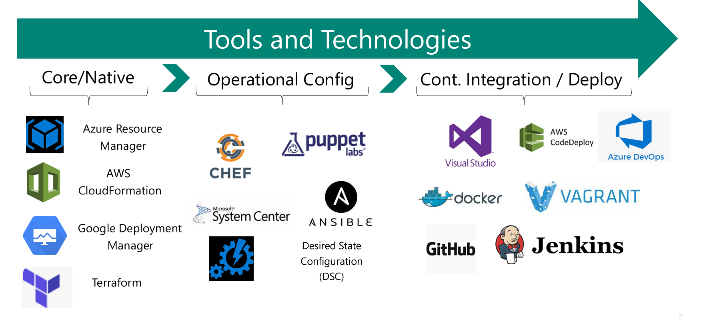
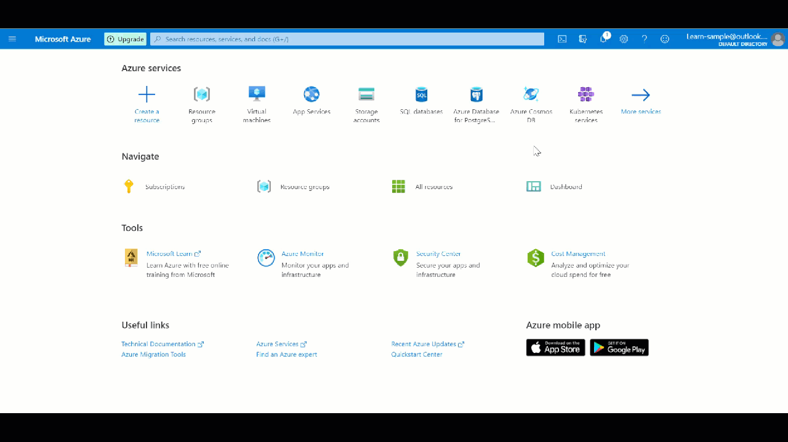
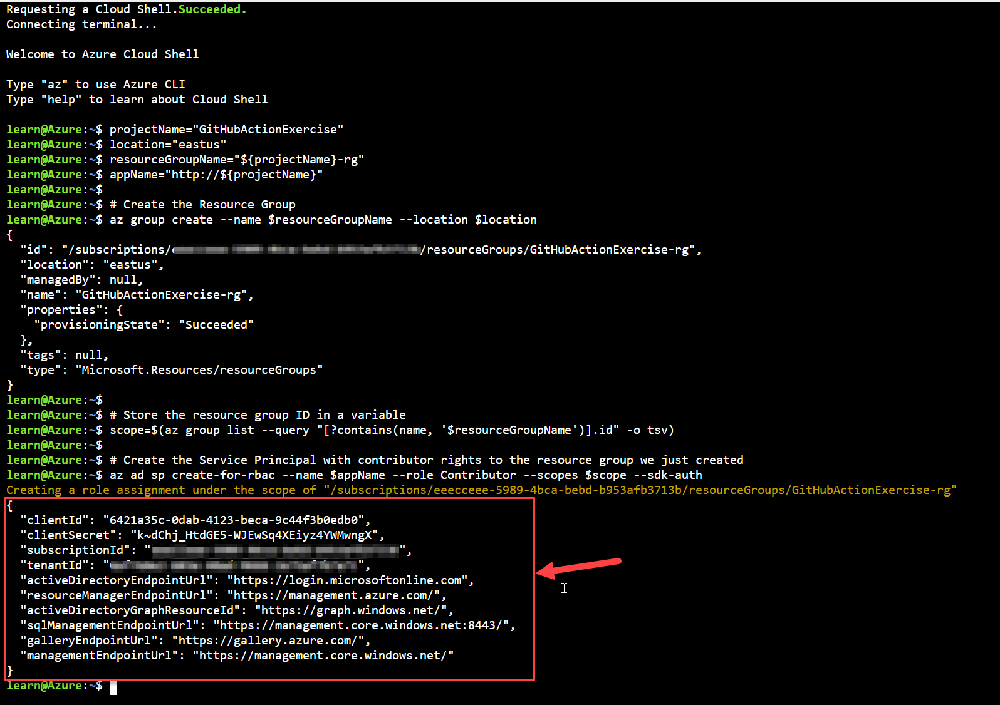
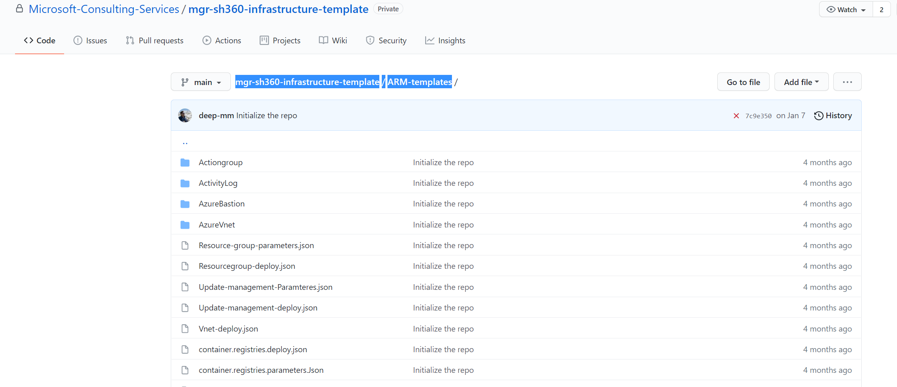
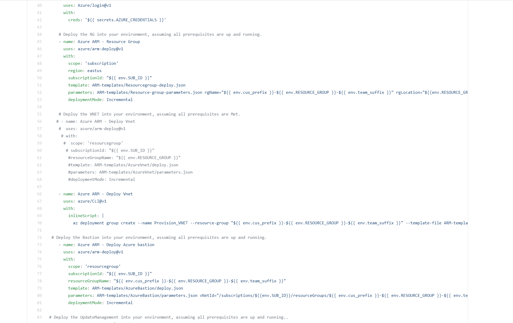
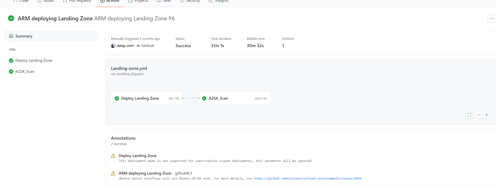

Module 1: Configure IAC Workflow - ARM
What is Infrastructure as Code (IAC)?
Infrastructure as Code is a set of techniques and practices which help IT Pros remove the burden associated with the day to day build and management of modular infrastructure. It allows IT Pros to build and maintain their modern server environment in a way that is similar to how software developers build and maintain application code
Infrastructure as Code (IaC) is the management of infrastructure (networks, virtual machines, load balancers, and Storage) in a descriptive model, using the same versioning as DevOps team uses for source code. Like the principle that the same source code generates the same binary, an IaC model generates the same environment every time it is applied. IaC is a key DevOps practice and is used in conjunction with continuous delivery.
What are Github Actions ?
GitHub Actions helps you automate your software development workflows from within GitHub. You can deploy workflows in the same place where you store code and collaborate on pull requests and issues.
In GitHub Actions, a workflow is an automated process that you set up in your GitHub repository. You can build, test, package, release, or deploy any project on GitHub with a workflow.
GitHub Actions help team to be agile and competitive in today's marketplace. They help you automate tasks for the system development or solution development lifecycle. Suppose you and your team are developing a solution that will require a significant number of resources in an Azure environment. You need to ensure that the solution can be deployed quickly and automatically as part of a continuous integration and continuous delivery (CI/CD) pipeline. That way, you can automate the creation and teardown of the project's infrastructure. By including the resource management in your CI/CD pipeline, you're adopting infrastructure as code (IaC) to automate the IT tasks.
What are Workflows ?
Workflows have one or more jobs. Each job contains a set of steps that perform individual tasks. Steps can run commands or use an action. You can create your own actions or use actions shared by the GitHub community and customize them as needed. Each workflow is made up of individual actions that run after a specific event (like a pull request) occur. The individual actions are packaged scripts that automate software development tasks.
GitHub Actions enable you to create custom workflows for the software development lifecycle directly in the GitHub repository where your ARM templates are stored. A YAML file defines a workflow.
A basic workflow for deploying an ARM template can have at least three steps:
- Check out a template file.
- Sign in to Azure.
- Deploy the template.
The Azure sign-in action uses a service principal to authenticate against Azure. For the principal of a CI/CD workflow to deploy Azure resources, it needs the right built-in contributor.
Several tools are available to help you achieve these goals of deploying and Implementing IAC. Some examples are :

Exercise 1: Configure authentication between GitHub Actions and your Azure subscription
Note: You can skip this exercise if you have already configured IAC in Getting-Started section.
To deploy any resources to Azure by using GitHub Actions, you need to create an Azure service principal and give it permissions to create resources defined in your templates. You'll perform that step in the Azure Cloud Shell section of the Azure portal after you're signed in to your subscription.
- Create the service principal section:
For the principal of a GitHub Actions workflow to deploy Azure resources, it needs the right built-in contributor.
The following Azure CLI script shows how you can generate an Azure service principal with contributor permissions in an Azure resource group. This resource group is where the workflow will deploy the resources defined in your ARM template. Note that you need to be owner of such subscription in order to give your service principal contributor rights.
- Make sure you note the "projectName" variable as we will be using this same variable in the other places too.. we will be editing the arm template resource group section in later exercises
projectName="GitHubActionExercise"
location="eastus"
resourceGroupName="mgr-${projectName}-gc"
appName="http://${projectName}"
# Create the resource group
az group create --name $resourceGroupName --location $location
# Store the resource group ID in a variable
scope=$(az group list --query "[?contains(name, '$resourceGroupName')].id" -o tsv)
# Create the service principal with contributor rights to the resource group we just created
az ad sp create-for-rbac --name $appName --role Contributor --scopes $scope --sdk-auth
In the portal, while you're signed in your subscription, select the Cloud Shell icon to open the shell at the bottom of the page.

In the shell, use the preceding code to create the service principal. You'll get the following results. Copy the JSON part of the results (the content in the red box in the following screenshot) because you'll need it when configuring the secret in GitHub.

Copy the JSON output and store it as a GitHub secret within your GitHub repository. To do this, from your GitHub repository, select the Settings tab and then select Secrets from the left menu.
Enter the following values and then select Add secret:
- Name: Enter AZURE_CREDENTIALS.
- Value: Paste the JSON output that you copied earlier.

This is the information that you'll need to specify the authentication in the workflow.
Exercise 2: Verify ARM template file in the repo
Go to the IAC repository in Github and open the GitHub Codespaces if you have one already created. If not, go ahead and select
+ New codespace.Navigate to
mgr-sh360-infrastructure-template/ARM-templatesfolder. All the ARM templates that we will be using to deploy the infrastructure resources on Azure are in this folder. Take some time to explore this folder and understand the ARM templates.
Click on the Arm template JSON files and verify all the required parameters and Values are present.
Exercise 3: Update Landing Zone WorkFlow File
The workflow files are stored in the .github/workflows folder at the root of your repository. The workflow file extension can be either .yml or .yaml.
Navigate to mgr-sh360-infrastructure-template/.github/workflows/Landing-zone.yml file.

Create a new branch following the
users/{user_alias}/{purpose_of_the_branch}schema.A workflow file, starts with defining its name, which in our case is ARM deploying Landing Zone. Next is the Triggers section called on, this section is responsible for listing down all the different ways this workflow is triggered. We have defined 3 ways here:
Push: This trigger ensures that whenever a new update is pushed in particular branches this build workflow must run. We have specified just the main branch, thus only when the main branch has some updates pushed the build pipeline is expected to run.
Pull Request: This trigger ensures that whenever a PR is raised against a particular branch, the build pipeline is run as a verification run. We have specified just the main branch, thus only when a PR is raised against the main branch, the build pipeline is expected to run.
Workflow Dispatch: This option is used for manually triggering the workflow.
Uncomment the push and pull request section in the triggers, to let the workflow trigger automatically on a push or PR to the main branch.
Moving on, next section of a workflow is jobs. There can be n number of jobs inside a workflow, and each job can have n number of actions within it to perform various tasks. Each job runs on a particular agent and this is specified using the option runs-on. GitHub by default has GitHub hosted agents with various operating systems like windows, ubuntu, macos. But one can also make use of self-hosted agents. In our case for the Landing Zone deploy stage we utilize the ubuntu-latest agent.
Inside the job, there are multiple actions defined under the steps section.
The first action, Checkout Repository, is responsible for cloning the code into the agent upon which actions will be performed.
Next 2 actions Set Environment Variables is used to set variable groups that this workflow makes use of during the run. These variable groups are defined under the folder
.github > variables. Since GitHub currently doesn't have a concept of variable groups, we created this custom action to make use of variable groups in workflows.Next, Azure Login is used to authenticate to Azure utilizing the Service Principle that we have added in the Secrets.
The next few tasks are responsible for ARM template deployment on Azure. There are 2 ways to achieve this, firstly using the azure cli action available in GitHub, and calling the
az deployment group createazure cli command. The second way is by utilizing the arm-deploy action available in GitHub, and filling in appropriate values such as template path, resource group name, etc.Go to the action: Azure ARM - Deploy Azure Activity log. This action is currently disabled, to enable this removed the if: {{ false }} from the action. This action uses azure cli to deploy azure activity log ARM template.
Go to the action: Azure ARM - Deploy Azure Action Group. This action is currently disabled, to enable this removed the if: {{ false }} from the action. This action uses arm-deploy action to deploy azure action group ARM template.
After having done all the changes. Commit them and create a Pull Request. As part of the pull request check, the Landing Zone workflows will be triggered. Once the pull requests is approved and checks have been passed, you can merge the changes into the main branch.

To know more about the Actions used refer: Azure GitHub Actions
As part of this merge, the IAC workflow will be triggered again. If successfully executed, Monitor the progress of the workflow by checking the Components are created. Once the Shared IAC is deployed.

Key takeaways
- Learning GitHub Workflow and Actions.
- Deploy IAC
- Understanding the Azure Resources and Automation.